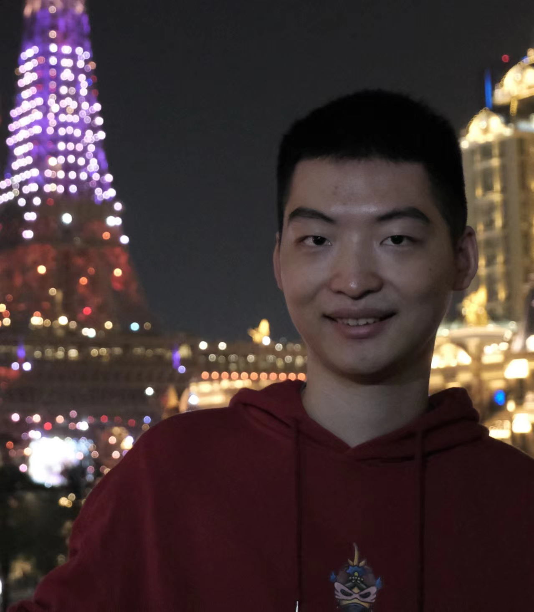

Chenchang Li
I am a Ph.D. student at the National University of Singapore (NUS), working in the NUS Biorobotics Lab under the supervision of Prof. Haoyong Yu.
I received my master's degree from Tsinghua University, where I was fortunate to collaborate with Prof. Huazhe Xu. Prior to that, I obtained my bachelor's degree from the School of the Gifted Young at the University of Science and Technology of China.

Research
I am broadly interested in robotics. Recently, my research has focused on intelligent sensing and learning from human demonstrations.
My ultimate goal is to develop robots that can significantly improve people's lives, which demands a high level of robustness and safety.
Feel free to contact me for collaboration in robotics research, including learning, control, and sensing!
Publications (* indicates equal contribution)
-
DeformNet: Latent Space Modeling and Dynamics Prediction for Deformable Object Manipulation
Chenchang Li* , Zihao Ai*, Tong Wu, Xiaosa Li, Wenbo Ding, Huazhe Xu.
IEEE International Conference on Robotics and Automation (ICRA), 2024 Oral -
TacTID: High-performance Visuo-Tactile Sensor-based Terrain Identification for Legged Robots
Ziwu Song*, Chenchang Li*, Zhentan Quan, Shilong Mu, Xiaosa Li, Ziyi Zhao, Wanxin Jin, Chenye Wu, Wenbo Ding, Xiao-Ping Zhang.
IEEE Sensors Journal, 2024 -
Dual-modal Tactile E‑skin: Enabling Bidirectional Human–Robot Interaction via Integrated Tactile Perception and Feedback
Shilong Mu*, Runze Zhao*, Zenan Lin, Yan Huang, Shoujie Li, Chenchang Li, Xiao-Ping Zhang, Wenbo Ding.
IEEE International Conference on Robotics and Automation (ICRA), 2024 Oral
Selected Awards
| RAS Travel Award, ICRA 2024 |
| Tsinghua University Graduate School Comprehensive Scholarship, 2023 |
| USTC Outstanding Freshman Scholarship, 2016 |
Academic Services
Reviewer for IROS 2024, ICML 2022, IEEE JSTSP.